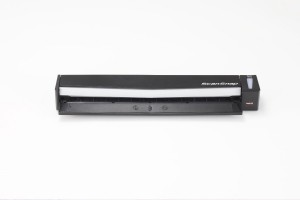

Mrs. Paperless testet den Fujitsu ScanSnap S1100
Testbericht Fujitsu ScanSnap S1100
Für meine Projekte bin ich viel unterwegs. Auf diesen Geschäftsreisen habe ich mir schon so manches Mal einen portablen Scanner gewünscht, mit dem ich Papierlosigkeit vorführen kann. Denn leider besteht für viele Menschen hier noch die Wirklichkeit aus jeder Menge Zetteln, Rechnungen, Dokumenten, Zeitungsartikeln und Visitenkarten. Auch Kunden fragen mich oft nach einer Geräte-Empfehlung. Höchste Zeit also, einen weiteren mobilen Scanner unter die Lupe zu nehmen.
Entschieden habe ich mich zunächst für den ScanSnap S1100 von Fujitsu, der auch unterwegs alle Papierstücke erfassen hilft.
Klein, Leichtgewicht und easy? Ja!

Gespannt erwartete ich diese Woche die Lieferung von Fujitsu. Schon das Paket überraschte mich, so klein war es, und erinnerte an die Verpackungsform einer Tonerkartusche. Das Auspacken und Installieren ging problemlos und sehr schnell. Von der Installation bis zum ersten Scan habe ich nicht mehr als 5 Minuten gebraucht.Über den USB-Anschluß an meinem MacBook funktionierte die Stromversorgung und das Einlesen von Daten herrlich unkompliziert; der Scanner besitzt keinen eigenen Speicher oder Batterien. Zusätzliches Gewicht durch Stecker, Trafo und Netzkabel spare ich mir so auf Reisen und mit seinen 350 Gramm ist der ScanSnap selbst ebenfalls sehr leicht. Für mich als Mrs. Paperless ein großer Vorteil, für James Bond eher schlecht, da ein herumliegendes Geheimdokument ohne angeschlossenen Rechner nicht mal eben so eingescannt werden kann. 😉
Im Einsatz
Ich legte ein Dokument an die Scan-Kante an, damit es zunächst ein kleines Stück eingezogen wird, dann konnte ich schon die Scan-Taste drücken. Der Scanner erkennt selbstständig, ob er in Farbe oder Schwarz/Weiß arbeiten muss. Das A4-Blatt wanderte flott durch. Auch mit kleineren Formaten als A4 hatte der Scanner keine Schwierigkeiten.
Zum Scannen doppelseitiger Texte nimmt man einfach das Blatt, dreht es um und legt es erneut ein. Solange Sie am Scanner nicht auf Stopp drücken, werden weitere Blätter eingelesen und an das aktuelle Dokument angehängt. Mit so guten Scanergebnissen hatte ich nicht gerechnet, sie sind qualitativ nicht von den größeren Modellen zu unterscheiden. Mitgeliefert sind, neben dem eigentlichen Scan-Programm, Abby Fine Reader, Cardiris und Evernote. Mit diesen Programmen können Sie Ihre eingescannten Texte in editierbares Textformat wandeln, Visitenkarten einlesen und Dokumente verwalten. Scannen mit OCR (Optical Character Recognition für durchsuchbare PDF’s) ist inzwischen eine Selbstverständlichkeit.
An meinem Mac öffnete sich automatisch der Scansnap-Manager, über den ich mehrere Ziele angeben oder weitere Seiten scannen konnte, die in einem PDF zusammenfügt wurden.
Die Scans können einfach an:
- an Office-Software weitergegeben werden
- per E-Mail verschickt werden
- im Web hochgeladen werden (z.B. für Google Docs oder Evernote)
- Visitenkarten mit einem Spezialprogramm bearbeitet werden (z.B. Adresseinträge zuordnen)
Mein Fazit
Auf jeden Fall ein nützliches Werkzeug und empfehlenswert!
Ganz nach meinem Motto „Weg mit den Papierbergen“ bringt der ScanSnap S1100 Papierdokumente schnell in digitale Form, ganz gleich ob am Windows Rechner oder Mac. Allerdings ist er nur in direkter Verbindung mit einem Computer zu benutzen und mit gut 190,- Euro auch kein Schnäppchen. Andererseits sehe ich für mobiles Scannen keine wirkliche Alternative am Markt. Und für den Privatgebrauch bei dem nur hin und wieder ein Dokument gescannt werden muss, ist der kleine ScanSnap auch ideal.
Und noch ein Tipp an Fujitsu: Eine einfache Hülle oder Tasche mitliefern, in der das Gerät samt USB-Kabel verstaut werden kann.
Alles in allem: Der Fujitsu ScanSnap S1100 ist der erste Scanner, den ich auf meine größeren Reisen mitnehmen werde!
Lesen Sie auch meinen Testbericht zum Scanner Fujitsu iX500! Den habe ich fast immer dabei, wenn ich Kunden in HH besuche.
Weitere Artikel

Digitale Tools für Zusammenarbeit im Office
E-Mail, Digitale Ablage und eine Branchensoftware sind schon lange nicht mehr genug für effiziente Zusammenarbeit. Doch bevor Sie sich in einem Dschungel an digitalen Werkzeugen verlieren, sollten Sie sich über die Systematik …

Veränderung braucht Gewohnheit
Sowohl im Berufs-als auch im Privatleben sind wir ständig im Veränderungsmodus. Manche Veränderungen wollen wir umsetzen, manche müssen wir mitmachen. Wir alles wissen, dass Veränderung nie leicht sind und je länger wir etwas auf …